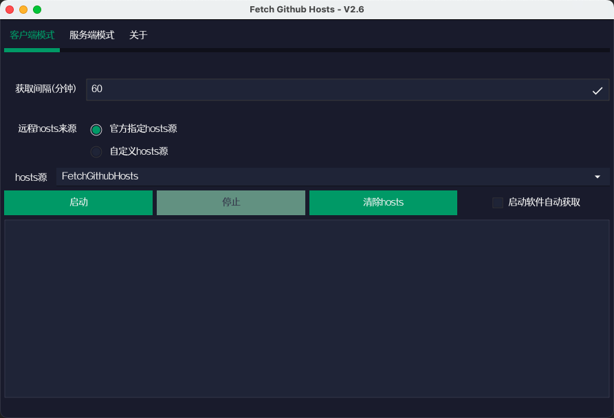
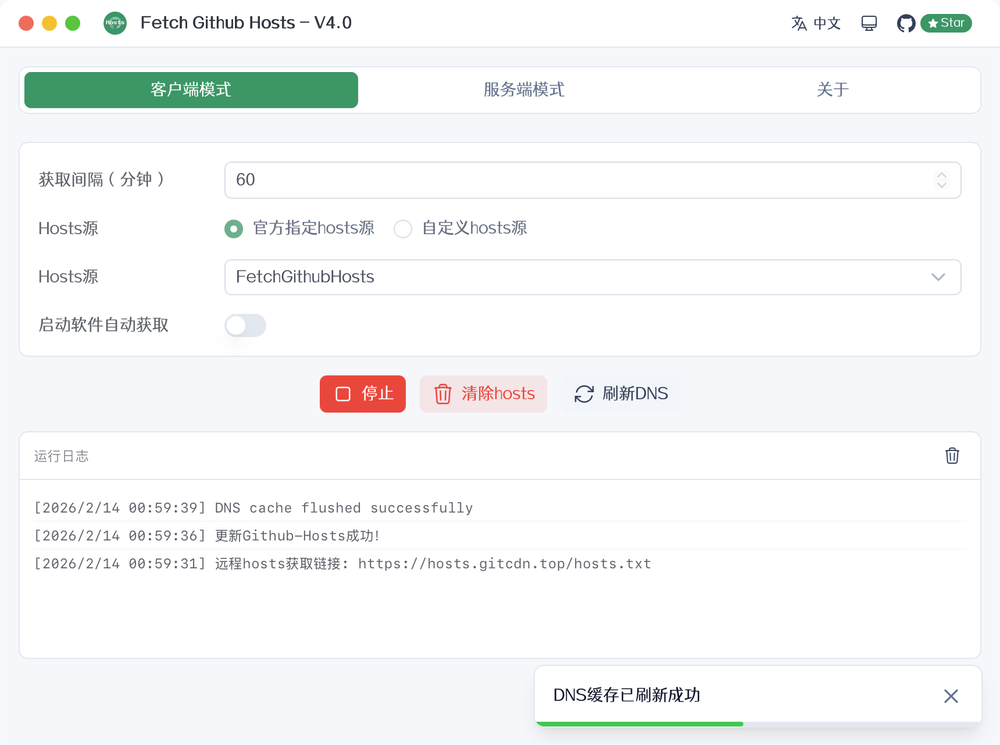
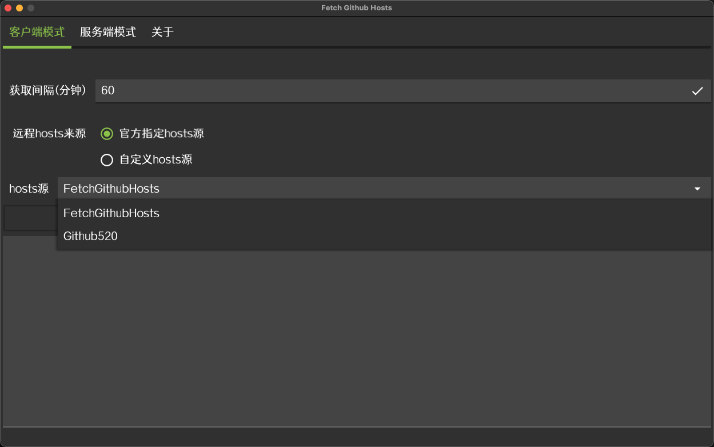
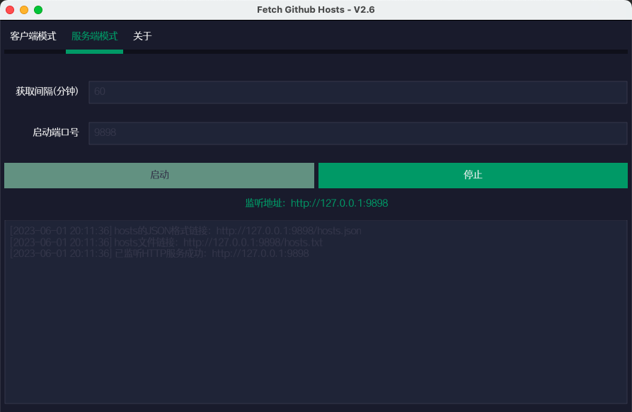

hosts.txt
Plain text format — append directly to your system hosts file
https://hosts.gitcdn.top/hosts.txt
A GitHub Hosts synchronization tool for research and learning. Use the desktop client, local server, CLI, or pull hosts files directly into your system.
Use the public hosts sources or copy commands to write them locally. Great for manual maintenance and automation.
sed -i "/# fetch-github-hosts begin/Q" /etc/hosts && curl -sL https://hosts.gitcdn.top/hosts.txt >> /etc/hostsTip: Schedule the command with crontab to keep hosts up to date automatically.
Desktop client and server in one — daily sync and private deployment covered.
macOS (Intel & Apple Silicon), Windows, and Linux — ready out of the box.
Auto-sync hosts from remote sources. Multiple sources, custom URLs, and scheduled pulls.
Self-host DNS resolution with HTTP API and hosts downloads for devices on your network.
Theme switching on both the desktop app and this site.
Simplified Chinese, Traditional Chinese, English, Japanese, and Korean.
Run in the background with one-click start/stop. Session-level privilege for writing hosts.
Choose desktop client, CLI, or manual hosts editing for your workflow.
Download the installer for your platform from Releases and run the GUI.




Note: On Linux, client mode needs sudo. Windows / macOS elevate when required.
# Linux / macOS
sudo ./fetch-github-hosts -m client
# Windows
fetch-github-hosts.exe -m client# default port 9898
./fetch-github-hosts -m server
# custom port
./fetch-github-hosts -m server -p 6666| Flag | Default | Description |
|---|---|---|
-m, --mode |
GUI | client / server |
-i, --interval |
60 | Fetch interval (minutes) |
-p, --port |
9898 | Server listen port |
-u, --url |
hosts.gitcdn.top | Remote hosts URL for client mode |
Open hosts.txt , paste the content into your system hosts file, then flush DNS.
/etc/hostsC:\Windows\System32\drivers\etc\hosts# Linux (example)
sudo systemctl restart NetworkManager
# or: /etc/init.d/network restart
# Windows
ipconfig /flushdns
# macOS
sudo killall -HUP mDNSResponder
Private deploy: run
fetch-github-hosts -m server -p 9898,
then open http://127.0.0.1:9898.
Prefer an overseas node. See the
GitHub README
for details.
Get the latest desktop packages from GitHub Releases.